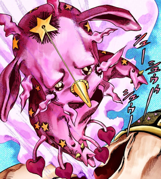
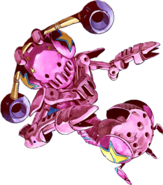
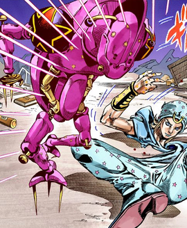
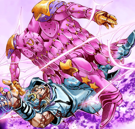

Johnny Joestar (ジョニィ・ジョースター Joni Jōsutā), born Jonathan Joestar (ジョナサン・ジョースター Jonasan Jōsutā,) is the protagonist of Steel Ball Run and a minor character in JoJolion. He is the seventh JoJo of the JoJo's Bizarre Adventure series. A former horse-racingW prodigy turned paraplegicW, Johnny joins the SBR race to find out the secret behind Gyro Zeppeli's Steel Balls as they're the only thing capable of healing his legs. Over the course of the race, Johnny becomes both a Spin User and a Stand User when he acquires Tusk.
Stand: Tusk Act 1
Manga Debut: SBR Chapter 25, Tusk (1) Initially named "Tusk" as it was the first form that Johnny sees, Tusk ACT1 is the Stand's base form. It is referred to as the guardian of the Left Arm of the Saint's Corpse.[2] Appearance ACT1 resembles a small, neotenousW animal. Its head is of equal or slightly greater size than its body, and it floats with two short, vague, and inarticulate arms and one such leg. Its posterior is marked somewhat irregularly by small stars, behind which dark circles radiate to their points; while four tendrils droop from the base of its trunk to the approximate length of its leg, bearing heart shapes. Fandom may earn an affiliate commission on sales made from links on this page. On its head, it bears two long, mammalian ears; small, reflective black eyes, under a brow of a troubled angle; a large star at the top of its forehead, behind which a dark circle radiates to its points, and from the center of which a string links with the tip of a cone fastened to the region of its nose. Eight wavering vestiges emanate from its head laterally: Two above; four from its sides, the lower of which, at its cheeks, are also surrounded by a dark circle; and one either side of its chin. It was designed with an axolotl in mind.[3] Tusk is primarily pink in all media featuring it.
Stand: Tusk Act 2
Manga Debut: SBR Chapter 43, Silent Way (4) Tusk ACT2 is the first evolved form of Tusk, accessed when Johnny makes progress in the technique of the Spin and uses the Golden Rectangle. Appearance Mechanically, ACT2 possesses small, sturdy torso and arms, greater in proportion to its head. From its head hang two barrel-shaped objects. A barrel-like unit the size of its head is suspended at the base of a short, flat spine. Araki added some elements to make it unclear whether it's animal or machine, like a traditional Stand.[3] Tusk is primarily pink in all media featuring it.
Stand: Tusk Act 3
Manga Debut: SBR Chapter 59, A Dream of Gettysburg Tusk ACT3 is the second evolution of Tusk, unlocked when Johnny witnesses Jesus counseling him and finds a renewed resolve in life. Appearance Although it is distinctly more human in shape, its head is still embedded into its body. ACT3 bears sharp spikes growing from both the underside of each of the three toes of its triangular feet and two from small, truncated, disc-shaped hands. On dark, spherical shoulders it bears the large, bold outline of a star; and from its upper lip to the rear of its head runs a tall, blade-like protrusion resembling a Mohawk. Tusk is primarily pink in all media featuring it.
Stand: Tusk Act 4
Manga Debut: SBR Chapter 85, Ball Breaker (3) Tusk ACT4 is the highest evolution of Tusk, accessed only when Johnny uses the Golden Spin. Appearance ACT4 is of humanoid shape and broad or square build; of articulated legs, arms, hands, and fingers. Its head is mounted in the front of its chest, and from the bottom of its chest hangs to its ankles a vestment comprising strings of vertical ellipses. Like Johnny, it wears a horseshoe on its forehead. The inside of its curtain-like body is hollow, and its face can move around like the Zaku's mono-eye.[3] Tusk is primarily pink in all media featuring it. Personality Occasionally vocalizing ACT1's "chumimi~in", ACT4 punches while inciting Johnny's expression of the Joestar family's "ORA ORA ORA" Stand Cry.